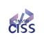
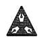
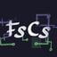
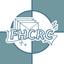
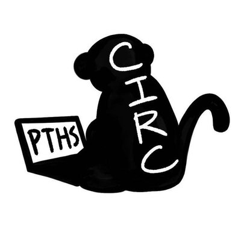

初階班
上學期
C++ 語法
- 輸入輸出、運算子、變數
- 條件判斷式
- 迴圈、陣列
- 字元、字串
- 函式、結構
重複段
下學期 上學期
基礎資料結構與演算法
- 複雜度分析
- STL 資料結構
- 遞迴
- 排序
- 搜尋
- 單調性與差分
進階班
下學期
進階資料結構與演算法
- DP 動態規劃
- Greedy 貪心法
- 基礎數論
- 基礎圖論、BFS & DFS
- 進階資料結構
- RMQ
SCIST 是一群來自嘉義、台南、高雄和屏東四地的高中學生，經過許多活動以及比賽後深深感受到南北資訊能力以及資源的落差，我們希望透過 SCIST 舉辦的課程、研討會帶動南部學生的資訊能力水平，同時也帶來更多資源提供所有人進行學習！


嘉義高中｜資訊研究社

嘉義女中｜程式研究社
嘉華高中｜資訊社
永慶高中｜資訊研究社
臺南一中｜資訊社
臺南女中｜資訊研究社

興國高中｜資訊應用社

臺南二中｜資訊研究社
南大附中｜資訊研究社
黎明中學｜程式設計研究社
成大南工｜資訊社

高雄中學｜程式設計社
高雄女中｜電腦資訊暨網路科技研究社

鳳山高中｜電腦資訊社
新莊高中｜電腦研究社

鳳新高中｜電腦研究社

屏東高中｜資訊研習社

精誠資訊 SYSTEX Corporation 成立於 1997 年，是台灣資訊服務產業龍頭企業，擁有約 4,200 名員工，位居台灣前一百大服務業，服務超過 30,000 家企業機構客戶，涵蓋兩岸三地、亞洲以及歐美區；代理經銷過 70 項產品，為多家國際級原廠的首要合作夥伴，2021 年合併營收為新台幣 295 億元。
由精誠資訊主辦的「Young Turing Program 少年圖靈計畫」，以電腦科學之父—艾倫．圖靈（Alan Turing）為名，Young Turing Program 少年圖靈計畫的成立，著眼於發掘年輕的軟體人才，透過程式競賽、專題實做、大學教授指導、企業志工導師輔導、海外參訪學習，啟發台灣學生對程式設計的興趣及熱誠，引導學生運用軟體力解決社會問題，或改善現況，進一步突破跟隨歐美制定標準的框架，勇於創新、創業，為台灣培育優秀軟人才，提升台灣軟體產業的高度，建立台灣的軟體國力。
精誠資訊 SYSTEX Corporation 成立於 1997 年，是台灣資訊服務產業龍頭企業，擁有約 4,200 名員工，位居台灣前一百大服務業，服務超過 30,000 家企業機構客戶，涵蓋兩岸三地、亞洲以及歐美區；代理經銷過 70 項產品，為多家國際級原廠的首要合作夥伴，2021 年合併營收為新台幣 295 億元。
由精誠資訊主辦的「Young Turing Program 少年圖靈計畫」，以電腦科學之父—艾倫．圖靈（Alan Turing）為名，Young Turing Program 少年圖靈計畫的成立，著眼於發掘年輕的軟體人才，透過程式競賽、專題實做、大學教授指導、企業志工導師輔導、海外參訪學習，啟發台灣學生對程式設計的興趣及熱誠，引導學生運用軟體力解決社會問題，或改善現況，進一步突破跟隨歐美制定標準的框架，勇於創新、創業，為台灣培育優秀軟人才，提升台灣軟體產業的高度，建立台灣的軟體國力。